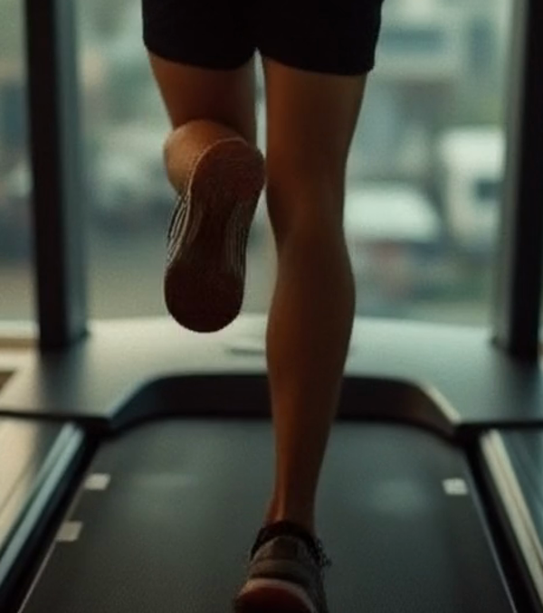
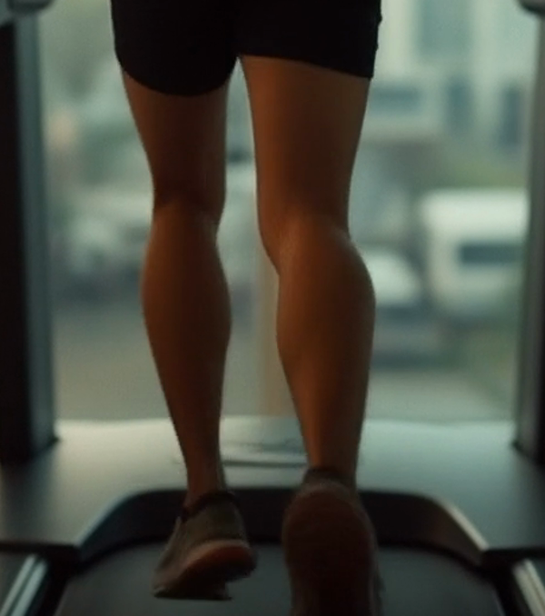
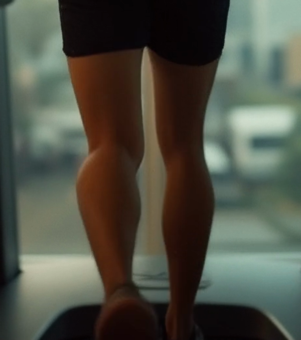

🥇 Wan 2.2 (המחקר ממליץ)
אנטומיה הכי אמיתית · חם/קולנועי
14 דק' · TeaCache
Hunyuan 1.5
חד · בהיר/טבעי
7 דק'
| קריטריון | Wan 2.2 | Hunyuan 1.5 |
|---|
| אנטומיה / גוף | הכי אמיתי ✓ | טוב |
| חדות | חד | חד מאוד ✓ |
| נעליים נשארות | ✓ | ✓ |
| גוון | חם/קולנועי | בהיר/טבעי |
| מהירות | 14 דק' | 7 דק' ✓ |
בקרת Wan — זום על הרגליים (התחלה / אמצע / סוף)



המסקנה: המחקר צדק — Wan נותן את הגוף הכי אמין (שרירים/פרופורציות), מה שחשוב למותג-כושר. אבל הוא איטי (14 דק') כי טוען שני מודלי-14B. Hunyuan חד ומהיר יותר (7 דק') אבל גוף קצת פחות "כבד".
הצעד הבא למהירות: SageAttention (30-35% מהיר, בלי איבוד-איכות) — זה ייקח את Wan לכ-9 דק'. או: Wan לשוטים-גיבור, Hunyuan לכמות. מה דעתך?